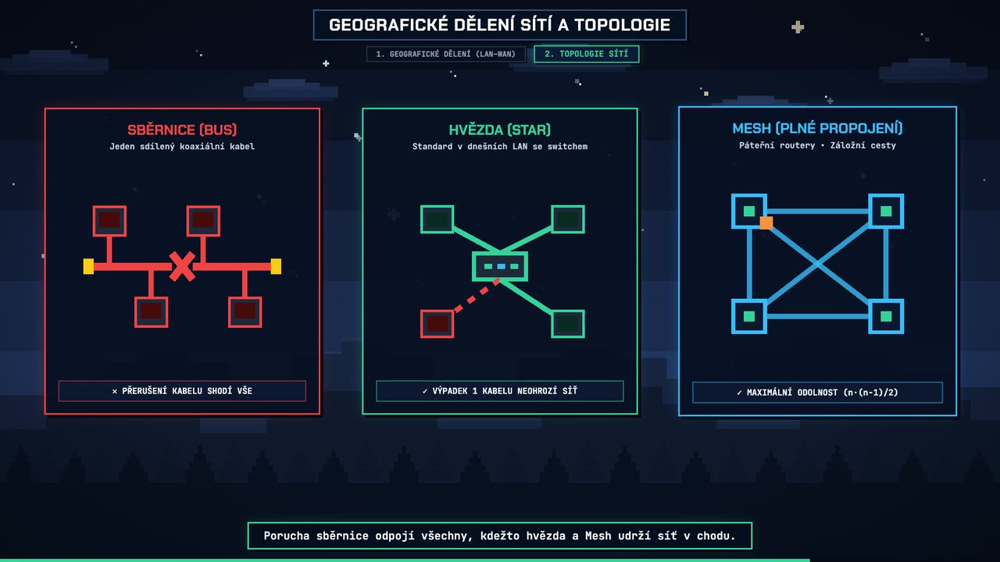
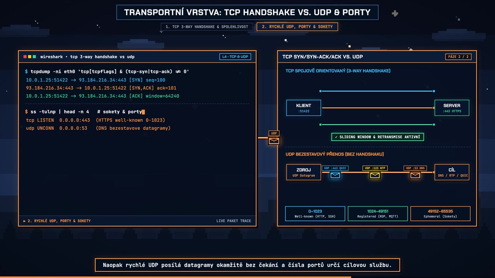

Otevřené výukové materiály · CC BY-NC-SA 4.0
Počítačové sítě & Protokoly TCP/IP
Přehledná interaktivní výuková prostředí s animovanými videi principů, živými síťovými simulacemi, prohlížečem portů, CIDR kalkulačkou, slovníčkem a testy pro samostudium i výuku.

7 modulů · 18 kapitol · 18 videíOP • Principy počítačových sítí
Základy sítí od topologií a Ethernetu po moderní podnikovou infrastrukturu: přepínání, VLAN 802.1Q, směrování, NAT/PAT, stateless/stateful/NGFW firewally, SDN a Wi-Fi.
Otevřít kurz OP

6 modulů · 16 kapitol · 16 dabovaných videíOP • Protokoly TCP/IP
Kompletní průvodce síťovými a aplikačními protokoly s interaktivními simulátory paketů a přehledem portů: TCP/UDP, RIP/OSPF/BGP, DNS, DHCP, NTP, HTTP/HTTPS, pošta, FTP/FTPS, Samba, SSH/SFTP, RDP/VNC a další.
Otevřít kurz Protokoly TCP/IP